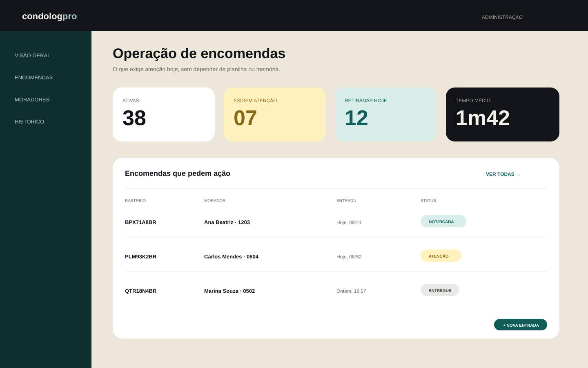
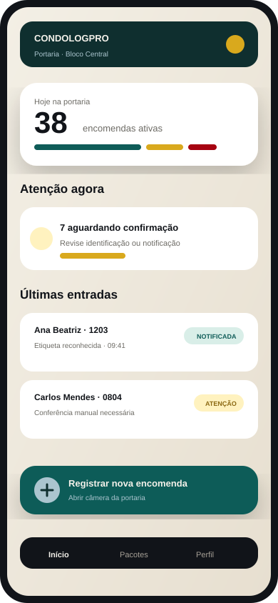
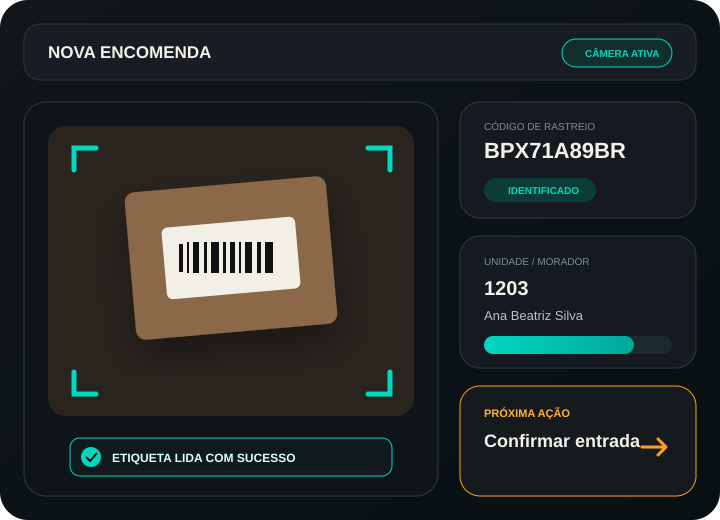

▤
Caderno físico
Anotações manuais dificultam busca, revisão e rastreabilidade.
HenricoOPS / Operational Signal
Digitalize a rotina da portaria sem mudar o que já funciona: foto da etiqueta, associação ao morador, aviso assistido e baixa da retirada com histórico.


01 / Problema real
O CondoLogPro conecta os pontos que hoje ficam separados entre caderno, WhatsApp e memória operacional — sem criar uma nova burocracia para a portaria.
Anotações manuais dificultam busca, revisão e rastreabilidade.
Mensagem escrita do zero consome tempo e espalha informação importante.
“Quem retirou e quando?” vira investigação em vez de consulta.
02 / Fluxo operacional
O pacote chega.
A câmera registra.
Morador é confirmado.
O aviso fica pronto.
Pendências visíveis.
Retirada registrada.
03 / Produto como prova
Três contextos do produto — recebimento, portaria mobile e administração — apresentados sem competir com a mensagem principal.
Etiqueta → confirmação
A leitura acelera o preenchimento, mas a operação continua quando a etiqueta está ruim ou incompleta.

Portaria no celular
Estados claros e foco no que exige atenção durante o atendimento.
Administração no desktop
Indicadores, lista operacional e estados ficam juntos para reduzir reconstrução manual.
04 / Continuidade operacional
A interface é organizada por estados de trabalho e prioridade, não por uma lista infinita de recursos.
Recebidas, pendentes, avisadas e retiradas aparecem como estados de trabalho.
Morador, bloco, apartamento ou código.
Entrada, aviso e retirada permanecem consultáveis.
Importação ajuda a trazer moradores e unidades.
Avanço, espera, sucesso e erro não competem.
05 / Valor compartilhado
Menos informação espalhada e mais continuidade para cada papel envolvido.
Registrar, avisar e acompanhar em um fluxo.
Entender pendências sem reconstruir a rotina.
Processo replicável e mais simples de acompanhar.
Aviso mais rápido e menos desencontro.
06 / Validação transparente
A landing diferencia produto existente de hipótese em teste para construir confiança sem exagero comercial.
Scan, identificação e confirmação usam o sinal principal.
Pendências e SLA ganham contraste operacional.
Sucesso confirmado fica distinto das ações intermediárias.
Reservado para problemas que realmente exigem resolução.
CondoLogPro
A rotina já acontece todos os dias. O CondoLogPro organiza o que hoje se perde entre a chegada do pacote e a retirada pelo morador.
Falar pelo WhatsApp →